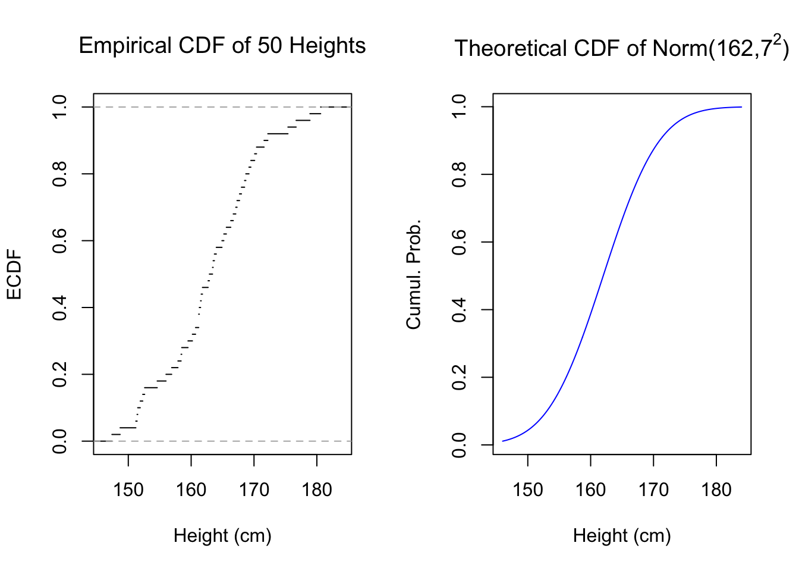
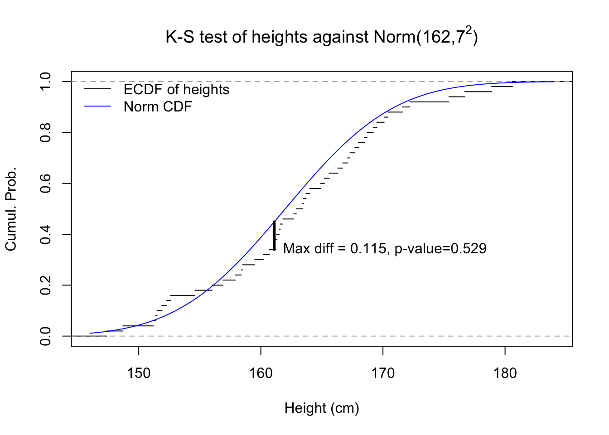

The prior sections have all assumed that our data comes to us from a known distribution, such as the normal or the binomial, and that all we need to do is find the specific parameters of the distribution. But in the real world, data are rarely labeled with their distribution name. Often, the data don’t even come from a named distribution at all. How can we be sure that we have chosen the right distribution with which to model our data?
Using what you and others know about the data
The first step is to narrow down your list of candidate distributions. Ideally you will be in one of two scenarios:
The data you’re examining has been studied before, and other researchers have described it as being distributed a certain way. For example, daily stock returns are often modeled as being normal or lognormal. Lightbulb lifetimes are often modeled as exponentially distributed. (Stay cautious: there may be important differences between the earlier research and the data in front of you.)
The data you’re examining comes from a generating process with known physical properties suggesting certain distributions. For example, even if we are not familiar with astronomical literature, we can reason for ourselves that large meteors (\(\gt 1\,\)km diameter) might strike the Earth according to a Poisson process.
However the world is not an ideal place, and so sometimes we will choose a distribution not because it is “correct” but because it is “good enough” for our data. Remember also that your data may not be distributed neatly. Your data may include different subsamples, each with their own distribution. Your data might also be distributed a certain way only after accounting for other variables, which we will consider in future chapters. Do ask yourself the following, if you are unsure of where to start:
Does your data only take integer values (or is it easily transformed to take only integer values)? If so, consider a discrete distribution.
But what if the integers are all very large, like stadium attendance figures? Depending on your task, continuous distributions might work just as well.
What if the general scale for the integers is different in each observation, such as smoking deaths by state? Perhaps it would be better to model the rate (e.g. deaths per 100,000 residents) as a continuous distribution, rather than modeling the count as discrete.
Can the integers be negative? If so, you might need to transform the data, since most discrete distributions don’t permit negative values.
Are the data naturally bounded above and/or below? Some distributions like the uniform or exponential might have matching bounds, others like the normal distribution do not have theoretical bounds, just practical limits where it would be rare to see any data.
Are your data spread out over many degrees of magnitude? If so, a logarithmic transformation or the lognormal distribution might be useful, or again finding a way to express these figures relative to some baseline which varies by observation.
Empirical distribution functions and the Kolmogorov-Smirnov test
Probability distributions are often plotted with very precise and elegant curves, brimming with mathematical truths and delicate nuances. And then there is your data: shaped like a mess, coarsely finite, and probably full of unhelpful outliers and misleading observations. But we can still plot the data as though it were a probability distribution, and learn from it:
Let \(\boldsymbol{x}\) be a sample of \(n\) observations. Define the indicator function \(1\!\!1\{x_i \le t\}\) as 1 when an observation from \(\boldsymbol{x}\) is less than or equal to some threshold value \(t\), and 0 otherwise. Then the empirical cumulative distribution function of \(\boldsymbol{x}\) on a support of all \(t \in \mathbb{R}\) is:
This definition provides us with a sample-based analog to the theoretical CDF of a probability distribution — which is why I use the notation \(\hat{F}(t)\), to emphasize that it estimates some unknown cumulative distribution \(F(t)\). In essence, the empirical distribution function simply plots the ranks of data, or the quantiles of the data if you prefer that term. Below, I plot the empirical distribution function for 50 simulated heights next to a theoretical normal distribution which may or may not have generated the sample:
Code
#empirical cdfpar(mfrow=c(1,2))set.seed(1977)hgt50 <-round(rnorm(50,165,7),1)plot(ecdf(hgt50),do.points=FALSE,main=expression('Empirical CDF of 50 Heights'),xlab='Height (cm)',ylab='ECDF',xlim=c(146,184))plot(seq(146,184,0.1),pnorm(seq(146,184,0.1),162,7),type='l',col='#0000ff',main=expression(paste('Theoretical CDF of Norm(162,',7^2,')')),ylab='Cumul. Prob.',xlab='Height (cm)',xlim=c(146,184))

Figure 5.1: Empirical and Theoretical CDFs
You can see these two graphs resemble each other. We may be tempted to say that the sample came from the normal distribution, or at least that it could be normal. But we need not settle for visual approximations: we can use a hypothesis test specifically developed for this situation, which will more precisely compare these two graphs. The Kolmogorov-Smirnov test, or K-S test, was developed to help statisticians answer two similar questions:
Could a sample \(\boldsymbol{x}\) have been generated according to a theoretical distribution \(X\)?
Could two samples, \(\boldsymbol{x}\) and \(\boldsymbol{y}\), be generated by the same unknown distribution?
It works by comparing the ECDF of one sample against either the theoretical CDF of a known distribution or against the ECDF of the second sample, and finding the maximum vertical difference between the two functions. Andrey Kolmogorov showed that under the null hypothesis that the two distributions are equal, this maximum discrepancy follows a novel probability distribution.
Code
#k-s testkst <-suppressWarnings(ks.test(hgt50,pnorm,mean=162,sd=7))Fhgt <-sapply(seq(146,184,0.1),function(z){mean(hgt50<=z)})Fnorm <-pnorm(seq(146,184,0.1),162,7)plot(ecdf(hgt50),do.points=FALSE,main=expression(paste('K-S test of heights against Norm(162,',7^2,')')),xlab='Height (cm)',ylab='Cumul. Prob.',xlim=c(146,184))lines(seq(146,184,0.1),Fnorm,col='#0000ff')k_max <-order(abs(Fnorm-Fhgt),decreasing=TRUE)[1]x_max <-seq(146,184,0.1)[152]segments(x0=x_max,x1=x_max,y0=Fhgt[k_max],y1=Fnorm[k_max],lwd=3)legend(x='topleft',bty='n',lwd=1,col=c('#000000','#0000ff'),legend=c('ECDF of heights','Norm CDF'))text(x=x_max,y=Fhgt[k_max],label='Max diff = 0.115, p-value=0.529',pos=4)

Figure 5.2: Graphical illustration of a Kolmogorov-Smirnov test
In the figure above, we see that while the empirical CDF of our 50 heights does not always perfectly match the theoretical CDF of the normal distribution with mean 162 and variance 49, that same theoretical distribution would generate samples of 50 observations that look even stranger over 52% of the time, more than half of all samples. So we cannot rule out that the height data were generated from that theoretical distribution.1
In practice, we can use maximum likelihood estimation and the Kolmogorov-Smirnov test as an effective “toggle” to help rapidly propose and confirm possible distributions for our data. Consider using this set of steps whenever you are faced with new univariate data:
Identify a candidate distribution type, such as normal or binomial
Use maximum likelihood to find the best possible parameters for the data, given your guess of the distribution type
Use a K-S test to determine whether that distribution and those parameters are actually a good fit to the data (the best fit is not necessarily a good fit)
If so, proceed under the assumption that your data could be distributed that way. If not, go back to step 1, identify a new distribution type, and repeat.
Since I generated the data, I will tell you: they are not from that distribution! They are from another!↩︎